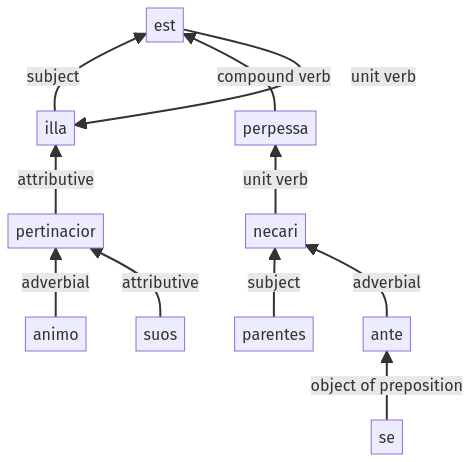

Hyginus, Fabulae, 35pr.1.26-35pr.1.35a
35pr.1.14-35pr.1.25a | 35pr.1.36-35pr.1.44a
Sentence 474
35pr.1.26-35pr.1.35a
illa animo pertinacior parentes suos ante se necari est perpessa.
1 illa animo pertinacior
2 parentes suos ante se necari
1 est perpessa
illa animo pertinacior parentes suos ante se necari est perpessa.
Highlighting:
- connecting words
- unit verb
- subject
- object
Color code:
- independent clause (level 1, transitive verb)
- indirect statement (level 2, transitive verb)
